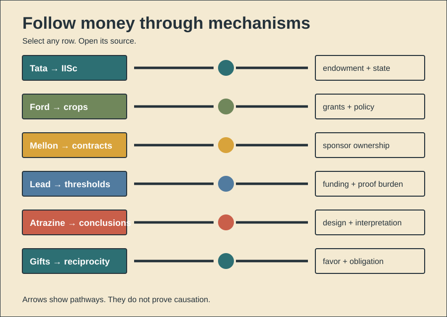

HISTORY INVESTIGATION
History Investigation — 28 September 2026, 03:00 Réunion
Unpublished draft. Prepared for WordPress. No website upload occurred.
01
Who entered quantum debate?
Documented fact. Solvay's soda business globalized. Ernest amassed industrial wealth. He funded Brussels institutes. The first council met. The year was 1911. Eighteen scientists attended. Curie joined seventeen men. Lorentz chaired their debate. Radiation and quanta dominated. Physics institutes followed during 1912. Chemistry followed during 1913. Five family generations continued support. Benefits. Curiosity-driven meetings endured. Disputes sharpened quantum questions. Archives preserved scientific exchanges. Scholarly interpretation. Industrial wealth built convening power. Invitations shaped who spoke. Small councils focused argument. They also excluded outsiders. Gender imbalance reflected institutions. National reach stayed European. Harms and risks. Patronage concentrated agenda access. Corporate prestige gained science. Yet documented coercion remains absent. Counterevidence and limits. Solvay funded fundamental inquiry. Scientific committees selected programs. Participants openly disagreed. Einstein reported little progress. Later importance grew retrospectively. Funding proves no dictated answer. One meeting caused no revolution. Records support enabled debate. They cannot prove motives.
147 body words
02
What changed after sale?
Documented fact. Howard Hughes founded HHMI. That happened during 1953. Hughes Aircraft became its asset. Tax scrutiny followed repeatedly. Hughes died during 1976. Trustees later sold Aircraft. The 1985 sale yielded billions. Biomedical funding then expanded. HHMI backed selected scientists. Its model funded people. Projects stayed flexible. Benefits. Researchers gained longer horizons. Failure received greater tolerance. A matched observational study followed. HHMI scientists produced more breakthroughs. They also changed research directions. Scholarly interpretation. Funding rules shaped exploration. Corporate capital enabled scientific patience. Trustee governance replaced founder control. Harms and risks. Selection concentrated large resources. Unsuccessful papers also increased. Early governance drew tax questions. Counterevidence and limits. Records show legitimate research. Courts upheld charitable status. Aircraft was later separated. No defense steering appears. The comparison lacked random assignment. Selected scientists were exceptional. Statistical matching cannot remove everything. HHMI caused no discovery alone. Its incentives changed risk-taking.
145 body words
03
What did reanalysis reveal?
Documented fact. GSK sponsored Study 329. Three treatments were assigned. Paroxetine, imipramine, or placebo. Prespecified primary outcomes failed. The 2001 article claimed efficacy. It described tolerability favorably. Company documents later became available. RIAT researchers reanalyzed them. No efficacy appeared during reanalysis. Harms were more numerous. Suicidal events needed recoding. Federal allegations also followed. GSK settled broader misconduct claims. Benefits. The trial generated reusable data. Data access enabled correction. RIAT showed restoration methods. Scholarly interpretation. Outcome selection changed meaning. Coding choices obscured harms. Academic authorship lent authority. Marketing amplified the article. Harms. Pediatric prescribing gained support. Readers received distorted evidence. Counterevidence and limits. Reanalysis used available records. Some records remained incomplete. Diagnostic coding requires judgment. Settlement covered multiple practices. It proves no single motive. Paroxetine helps some adults. This card concerns adolescents. The strongest finding stays narrow. Published conclusions contradicted prespecified results.
141 body words
04
What did full reports show?
Documented fact. Roche sponsored oseltamivir trials. Governments later stockpiled Tamiflu. Published reports remained incomplete. Published summaries guided policy. Reviewers requested full reports. Access took several years. Cochrane examined regulatory files. Their review covered twenty trials. Oseltamivir shortened symptoms modestly. Hospitalizations did not decrease. Complication reporting remained unreliable. Several harms appeared increased. EMA still judged benefits favorable. It maintains authorization today. Benefits. Tamiflu treats influenza symptoms. Prophylaxis reduced symptomatic influenza. Full reports enabled stronger review. The campaign improved transparency. Scholarly interpretation. Data availability changed confidence. Publication summaries hid methodological detail. Stockpiling exceeded proven outcomes. Harms and risks. Governments spent billions globally. Harms were underreported initially. Counterevidence and limits. Regulators had confidential data. Later meta-analysis found benefits. Epidemic decisions used uncertainty. Trials rarely measured severe outcomes. No review proves uselessness. Evidence supports modest symptom relief. It weakens broader claims. Transparency changed interpretation most.
141 body words
05
How did reports shift?
Documented fact. Parke-Davis sponsored gabapentin trials. Many tested unapproved uses. Internal documents later surfaced. Researchers compared those records. They found twenty-one trials. Eight never reached publication. Published outcomes often changed. Every documented switch favored efficacy. Participant counts sometimes differed. One article omitted forty percent. Publication plans carried branding messages. Warner-Lambert later pleaded guilty. Its settlement covered illegal promotion. Benefits. Trials explored possible uses. Gabapentin helps approved conditions. Litigation exposed valuable records. Those records improved reporting science. Scholarly interpretation. Research became marketing infrastructure. Selective publication shaped medical knowledge. Journal articles looked independent. Internal plans revealed coordination. Harms. Doctors received favorable evidence. Unsupported prescribing expanded. Public programs absorbed costs. Counterevidence and limits. Off-label prescribing stays legal. Some off-label uses have evidence. The reviewed sample was incomplete. Litigation selected available documents. Research discrepancies prove distortion. They prove no universal fraud. Pfizer acquired Warner-Lambert later. Corporate responsibility changed over time. The mechanism remains documented.
150 body words
06
Why display generosity?
Documented evidence. Public giving changes behavior. Experiments compare visible giving. Contributions rise when observed. They can rise uselessly. Donors still gain prestige. Large gifts attract naming rights. Institutions publicly honor benefactors. Such signals remain expensive. Evolutionary interpretation. Humans tracked cooperative partners. Generosity revealed available resources. It also signaled commitment. Reputation brought future partners. Public audiences magnified returns. Modern philanthropy uses visibility. Buildings preserve donor names. Foundations preserve family identities. Benefits. Visible gifts fund research. Recognition can inspire others. Reputation can reward cooperation. Long horizons support discovery. Harms and risks. Prestige can distort priorities. Naming can sanitize fortunes. Donors may dominate agendas. Institutions may avoid scrutiny. Counterevidence and limits. Giving motives stay mixed. Private generosity also exists. Visible gifts can remain useful. Experiments cannot explain dynasties. Culture changes recognition rules. Some grand gestures backfire. Observers may suspect strategy. Costly signaling predicts incentives. It proves no conscious motive. Governance determines public benefit.
150 body words
